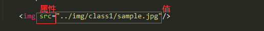

当你在完成上次的作业你可能会发现：”这些文段好像都不能改变位置捏！而我想要改变位置，怎么办？“
不慌，我们下面学习的”标签属性“会帮到你！
在上一节我们知道，我们在 <img /> 标签里写入了一个：src= "ImginePath"
这个就是一种属性。
拿回之前在class1插入的图片的位置，我们可以知道，标签属性的形式是这样：

<img src= "ImaginePath"/>
<!-- ↑标签 ↑属性 ↑值 -->
这就像给标签附加的信息（可以认为是加buff）
我们来解决上面的问题：改变那些文段的位置。
这里我们使用一种属性： align="center" 来把该段文字居中（这里应用于p标签和h1标签）
<h1 align= "center">居中标题</h1>
<p align= "center">把这段文字居中</p>
点击此处查看效果！PS:bgcolor属性是修改背景颜色，bg=BackGround